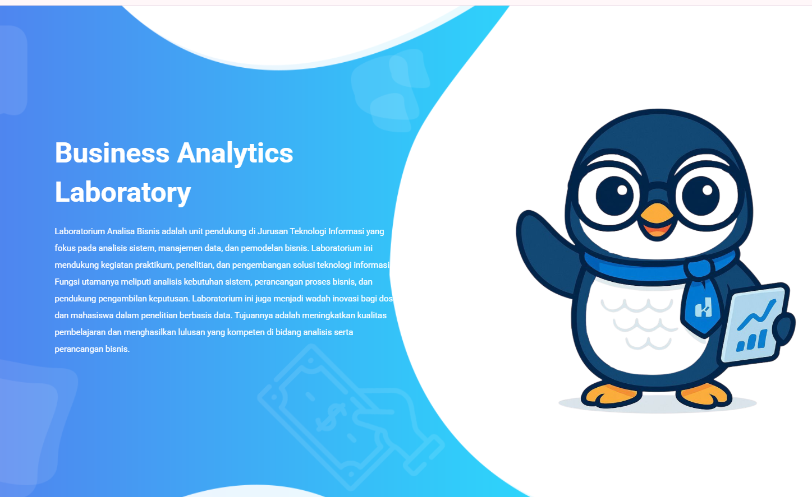
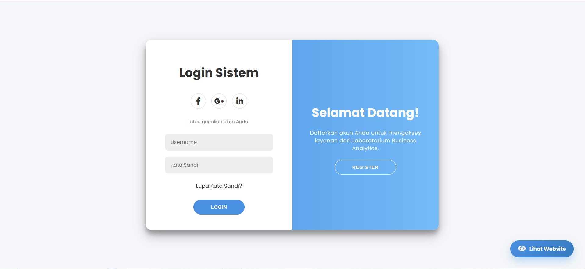
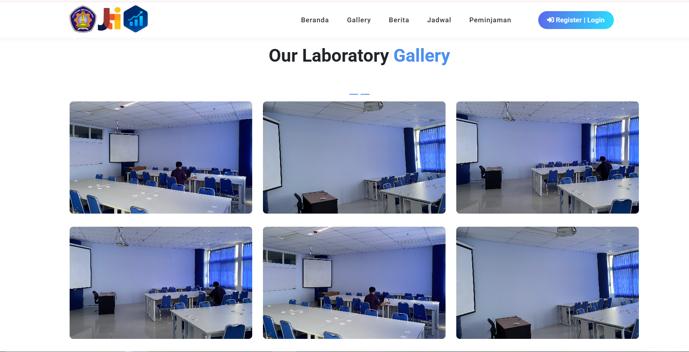
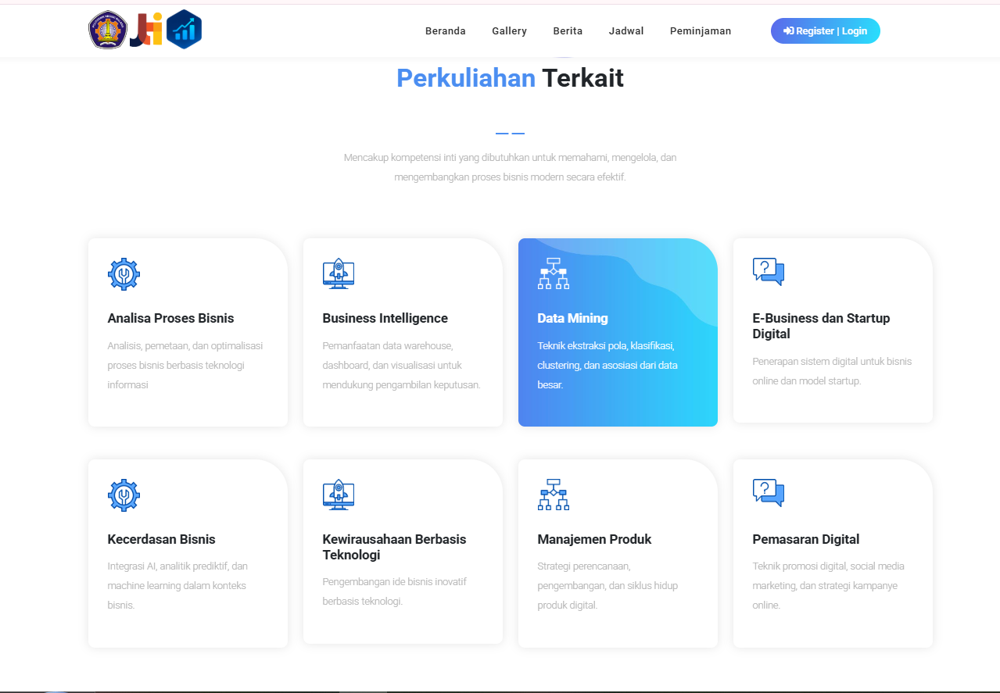

Front-End
Mengembangkan antarmuka pengguna (UI) yang responsif untuk halaman publik, galeri fasilitas, serta dashboard interaktif sesuai hak akses pengguna (Admin, Dosen, dan Mahasiswa).
Pengembangan website untuk Laboratorium Business Analytics sebagai media informasi dan pengelolaan aktivitas laboratorium.

Homepage

Page Overview

Features

Dashboard
Lab Business Analytics merupakan proyek pengembangan website profil dan sistem informasi laboratorium yang dikerjakan secara kolaboratif dari sisi Front-End hingga Back-End. Sistem ini dilengkapi dengan halaman profil dan galeri fasilitas laboratorium, layanan informasi perkuliahan terkait, autentikasi pengguna, serta dashboard multi-role terintegrasi untuk Admin, Dosen, dan Mahasiswa.
Mengembangkan antarmuka pengguna (UI) yang responsif untuk halaman publik, galeri fasilitas, serta dashboard interaktif sesuai hak akses pengguna (Admin, Dosen, dan Mahasiswa).
Membangun arsitektur sisi server dan basis data untuk mengelola autentikasi, alur peminjaman laboratorium, publikasi, serta integrasi data sistem secara dinamis.
Mengembangkan antarmuka Dashboard Dosen, termasuk sidebar,
halaman profil, publikasi terbaru, serta halaman riwayat
dan detail peminjaman. Selain itu, mengimplementasikan
fitur real-time searching dan filtering pada Landing Page,
Dashboard Admin, dan Dashboard Dosen.
Turut mengembangkan logika validasi status publikasi
otomatis saat data diedit, serta fitur keamanan dan
pengelolaan data akun dosen.